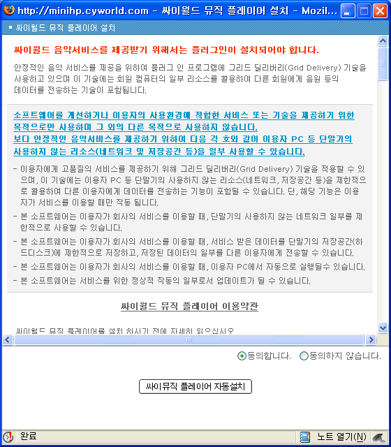
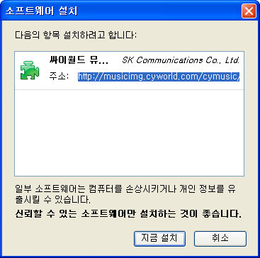

firefox 로 싸이월드에서 배경음악 들을 수 있다~
한 때 firefox 에서 싸이월드를 제대로 이용하기 위한 플러그인까지 나오곤 했던 firefox. 이제는 싸이월드측에서 firefox 용 플러그인을 만들어 firefox 유저도 싸이월드의 배경음악을 즐길 수 있게 되었다. 네이버의 firefox 용 툴바에 이어 꽤 유명한 국내 사이트에서의 firefox 지원. 앞으로 다른 사이트들의 지원도 기대된다.
싸이월드는 잠깐 하다가 잘하지 않고 있지만 꽤 잘 만든 서비스이다. 다만 언젠가부터 미니라는 작은 공간이 싫고, 내 홈페이지에 집중(!)하기 위해 나에게는 잘 쓰지 않는 서비스가 되어버렸다;;
검색해보니 firefox 플러그인은 지난 2007년 10월쯤부터 되었던 것 같다.

